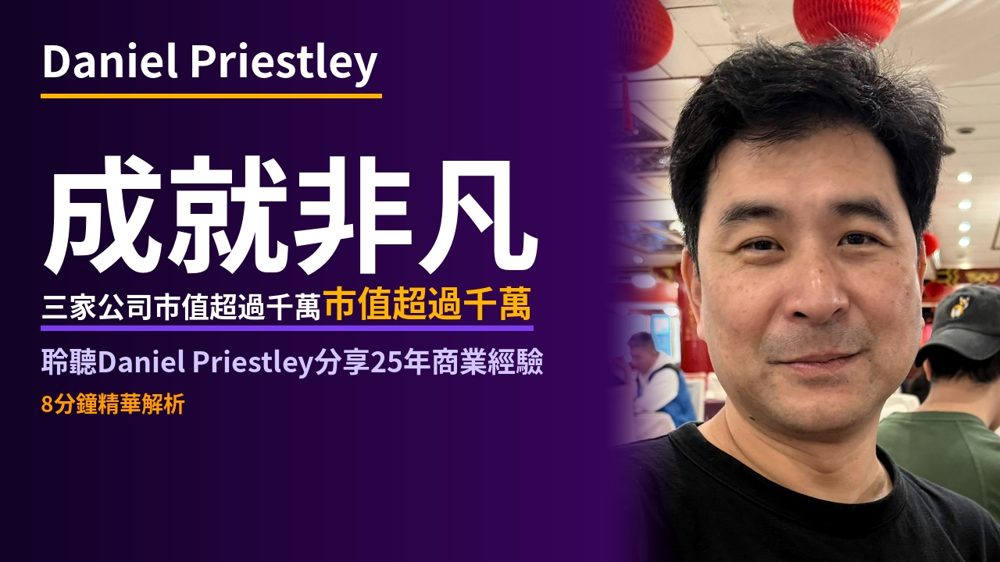

🎬 daniel_priestley — Stage Draft
📺 來源：Daniel Priestley — 25 Years of Business Advice in 31 Minutes
⏱ 目標時長：8-10 分鐘
📊 字數：2200 字
封面文案選擇
版本 A

成就非凡
三家公司市值超過千萬
聆聽Daniel Priestley分享25年商業經驗
版本 B

挫折反轉
從失敗學會勇敢創作
如何從未盡如人意的結果中找到成功
版本 C

智慧沉澱
二十五年商業智慧的探討
Daniel Priestley帶來數字時代的智慧資產觀點
播客腳本
【開場】
[BG: 一位成熟的商業領袖站在演講廳的舞台上，燈光聚焦在他身上，微微笑著，準備分享他豐富的經驗。]
隨著我步入四十五歲的人生階段，今天Daniel Priestley想分享從過去二十五年商業經驗和人生旅程中所學到的寶貴教訓。他是一位成就卓越的企業家，曾創立多家初創公司，其中三家市值超過一千萬美元。他的經歷豐富而多樣，從環遊世界到與億萬富翁交流，今天，他將這些見解帶給你。喜歡這類內容的朋友，先訂閱頻道，我們開始今天的分享。
【爭取的本質】
[BG: Daniel在辦公室裡，透過窗戶眺望城市天際線，深思著自己的職業生涯。]
Daniel說，過去的經歷中，他學到的一個重要教訓就是：你得到的是你爭取到的。他認為許多人無法達到真正的潛力，因為他們的目標並不夠高大。他感嘆，許多人沒有展現他們真正的能力，也沒有勇敢地將自己的見解付諸現實。他希望年輕的自己能夠不再猶豫，從而開始實現自己的理想。接下來他說的這一點同樣引人深思...
【多產與完美】
[BG: 數以百計的筆記本和電子設備堆滿在桌子上，各種內容正在創作中。]
Daniel認為，多產的重要性超過完美。他表示，我們常常因為追求完美而不敢發布自己的作品。別怕失敗和中庸，它們是成功的前奏。在他自己的經歷中，他創作了數百個視頻和文章，即使不是每一個都能得到極佳的反響，但成功的作品總會被看見。他勸誡，要大膽創作，讓好內容有機會脫穎而出。這個過程中，勇敢創作品將是你前進的橋梁。接下來，我們將探討一個新的類型資產...
【新經濟資產】
[BG: 座落於書架間的書籍，隨著時間的變遷，它們成為永恆的智慧財產。]
Daniel指出，這一代有不同於以往的資產，它們來自於智慧的數位化轉化。無論是在亞馬遜上出版書籍，還是製作YouTube視頻，都是數字時代價值的體現。這些資產即便你未直接介入，也能增加價值。他認為要抓住現代的機會，而不執著於父母那一代的資產形式。從數字資產到傳統資產，這是一個自然過渡的過程。接下來，Daniel談到吸引注意力的重要性...
【注意力與機會】
[BG: 一個熱鬧的網絡會議中，屏幕上展示著一位演說者的生動演講。]
他強調，成功很大程度上依賴於你所吸引的注意力。他提到，即便像是內向者也能學會如何有效地吸引注意力，以能夠將商業想法呈現在他人面前。他鼓勵大家站出來，不要等著被選中，去創造機會。與成功相關的注意力不只限於公開出現，還包括在合適的時間和地點與關鍵人物交流。接下來的內容會談論團隊的重要性...
【團隊的力量】
[BG: 活力四射的團隊正在會議桌旁集思廣益，為未來大計出謀劃策。]
Daniel認為，所有的成功都源於團隊協作，單打獨鬥難以達成偉業。他提到自己在事業初期就開始建立團隊，而這些人可能並非來自於頂尖的企業，相反，他們是渴望機會、高昂鬥志的人。重要的是，把合適的人引入你的團隊，並使整個團隊朝同一個方向努力。這已成為一種魔法般的協作效果。接下來，我們將探討能量的重要性...
【能量的遊戲】
[BG: 日常生活場景中，人們以不同的能量狀態從事各自的活動，每個人呈現著獨特的光彩。]
Daniel相信，生活是一場能量的遊戲，結果取決於你的能量狀態。他強調，正能量能吸引好事物，而負能量則會帶來相反的結果。他提到，樂觀不僅能夠讓你在挑戰中贏得勝利，也是吸引積極人士與你合作的重要因素。真正成功的人會選擇把自己置於積極環境中，避免落入負能量的陷阱。接下來，他強調了環境的重要性...
【環境的力量】
[BG: 一片繁忙都市中的創新孵化器，充滿著創新和可能性。]
Daniel指出，你的環境極大地影響了你的表現。他在許多不同的環境中發現，成功是由合適的環境催化而來的。例如，他提到曾與前毒販合作，幫助他們進入合法的商業圈子，以尋找新的成功機會。改變環境是轉換狀態的關鍵。他希望你勇於進入不舒適的環境以取得突破。接下來，他討論了現代的一個重要觀點...
【偉大的時代】
[BG: 現代城市的天空中，雲端互聯網連接著全球各地，隨時隨地的學習和聯繫成為可能。]
Daniel相信，我們正處於史上最偉大的時代。他指出，如今每人手中擁有無盡的資源和工具，從知識的獲取到創造力的發揮，全都比以往便利。他強調，並非過去更好，而是現今有更多機會讓我們去實現夢想。他呼籲大家擁抱這個時代，充分利用其提供的平台和資源。最後，他想和你分享關於金錢的語言...
【金錢的語言】
[BG: 金融辦公室中，數據圖表顯示著市場的起伏，各種機會正在被挖掘。]
Daniel指出，金錢並不單純是一種交易工具，而是機會的語言。他觀察到，許多人因不懂得這種語言而止步。他提出，學習瞭解其運行結構，掌握文件和策略的用法，能為你帶來更多機會。這並不只是關於熱情，而是如何有效地表達和呈現你的價值。他想提醒大家，準備好迎接未來的機會尤為重要。結尾再帶出一個重要的觀念...
【結語】
[BG: 和煦的陽光灑落在Daniel的書桌上，象徵著新的啟發與未來的希望。]
Daniel相信，這些經驗和觀念都有助於在不斷變遷的時代中前進。他總結道，成功和成長的關鍵不僅在於他所經歷的教訓，更在於如何應用這些知識去塑造自己的未來。AI在改變世界，我們一起慢慢搞懂它。下次見。
請回覆：1) 腳本OK？2) 選封面A/B/C？3) 背景圖方式 D（自動）或 G（手動）？